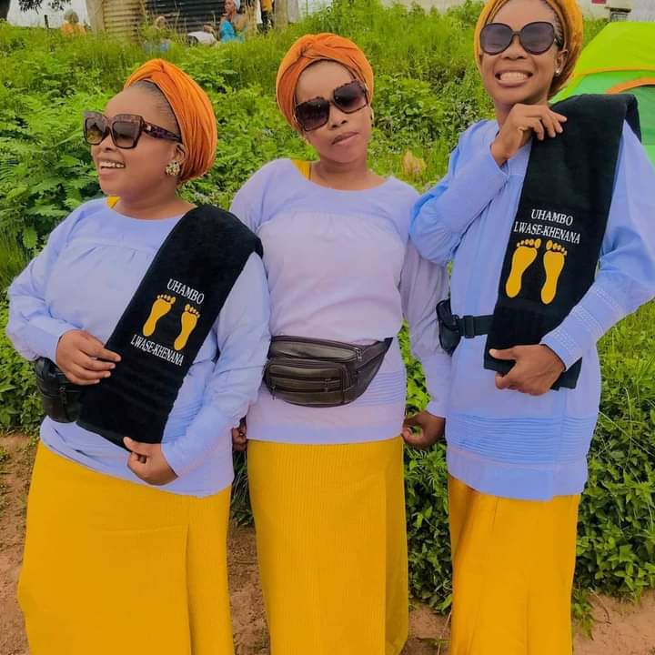

NATESA TUT sits at the geographic and social center of the Tshwane University of Technology campus. Here at Natesa we provide space for students, and members of the Nazareth Baptist Church to study, socialize, eat, host events, attend meetings, and engage in campus life while practicing their religious beliefs.
Our facility provides a home to many exciting university groups, access to key student services, and collaborative spaces for students to connect on campus. In addition, Natesa offers over 20 000 square metres of meeting and event space, with the ability to host various campus events, seminars, conferences, banquets, and various other functions.
Here at the Natesa TUT we are always learning and growing, deliverying new services that add value to your university experience. Our friendly senior students is eager to engage with you in developing new programs to meet your needs.
Upcoming Event
Coming Next Week!! Join your fellow students for a closing function! Prizes are awarded to the top three teams for umgidi and singing hyms(choral music) teams. All participants are eligible for door prizes. To participate, please remember to bring your student cards, trumpets(izimbomu), drums(izigubhu), shields(emahawu) and amashoba. Check in begins at 8:30 am with the first ceremony being a morning prayer(Vukanathi) at 9:00 a.m.
All teams must register for imigidi and choral music. Please include team name and the institution name with registration (teams may include up to 20% non-student guests). Due to overwhelming popularity, registrations the day of the teams may not be available. Therefore registration will be done online, due date being the night before event.
Please send registration information to natesachairperson@natesa.co.za